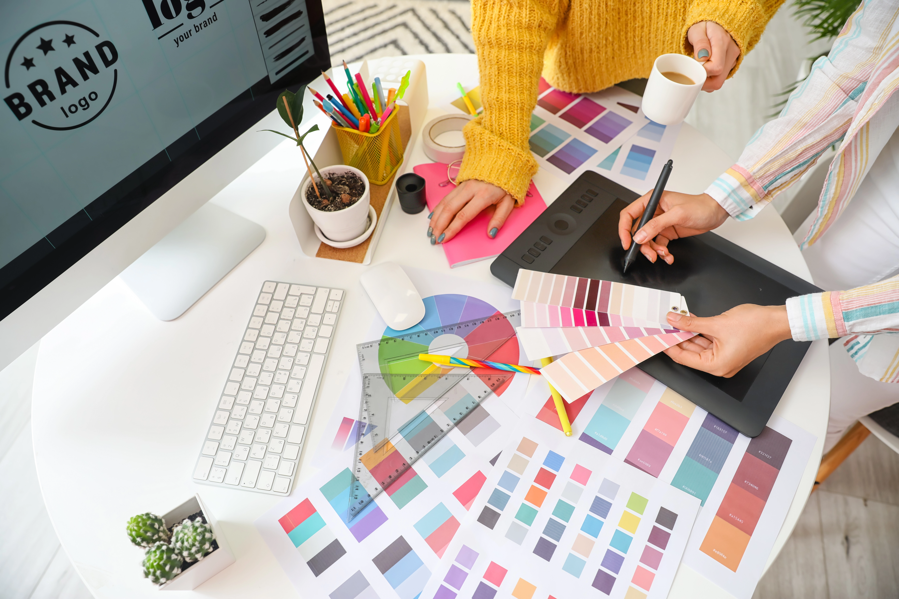

De l’idée créative à l’expérience digitale
Un projet digital ne se limite pas à une simple idée : il prend vie grâce à une réflexion visuelle cohérente, une expérience utilisateur pensée avec précision et des outils créatifs innovants.
Je souhaite me former aux métiers de la création digitale et du design d’interfaces afin de concevoir des expériences visuelles modernes, immersives et adaptées aux usages numériques d’aujourd’hui.
Mon objectif : intégrer le Bachelor Création Digitale & Design d’Interfaces avec IA dès septembre, pour développer des compétences en design graphique, UX/UI, identité visuelle et création assistée par l’intelligence artificielle.


Mon projet professionnel
Après une réorientation vers les métiers du digital et de la création graphique, je souhaite aujourd’hui poursuivre mon évolution vers la création numérique et le design d’interfaces, un domaine où l’image, l’expérience utilisateur et les nouvelles technologies se rejoignent pour concevoir des expériences visuelles modernes, interactives et impactantes.
Ce qui m’attire particulièrement dans le design digital, c’est la possibilité de transformer des idées en expériences visuelles concrètes : créer des interfaces intuitives, développer des univers graphiques cohérents et imaginer des contenus capables de transmettre un message fort.
Ce que je souhaite apporter :
- Comprendre les besoins d’un projet et proposer des solutions visuelles adaptées
- Créer des identités graphiques cohérentes pour le web et les supports digitaux
- Concevoir des interfaces modernes centrées sur l’expérience utilisateur
- Utiliser les outils créatifs et l’intelligence artificielle pour enrichir le processus de création
- Participer à des projets mêlant design, innovation et communication digitale
Curieuse, créative et rigoureuse, je souhaite mettre ma motivation et ma capacité d’adaptation au service de projets innovants.
En savoir plus sur mon parcours →Pourquoi me choisir ?
Des qualités mises au service de la réalisation de vos projets de communication.
Organisation
Gestion des priorités, respect des délais et structuration rigoureuse des contenus.
Rigueur
Sens du détail, cohérence graphique et technique, contrôle qualité.
Créativité technique
Dialogue entre idées créatives et contraintes de production multi-formats.
Adaptabilité
Capacité à apprendre rapidement et à m'adapter aux outils et méthodes.
Ce que je peux apporter
Compétences acquises en production digitale et en gestion de projets plurimédia, au service de vos réalisations.
- Conception de supports digitaux cohérents et structurés
- Adaptation de contenus aux différents formats numériques
- Maîtrise des bases du développement web (HTML, CSS)
- Compréhension des enjeux UX / accessibilité / performance
- Organisation, autonomie et sens du détail
- Capacité à apprendre rapidement et à m'adapter aux outils

À la recherche d'une alternance
Je recherche une entreprise prête à m’accueillir en alternance dans le cadre du Bachelor Création Digitale & Design d’Interfaces avec IA, afin de développer une expérience concrète dans les métiers du design digital et de la communication visuelle.
Ce site vous présente mon profil, mes compétences et mes réalisations autour de la création numérique, du design visuel et des projets digitaux.